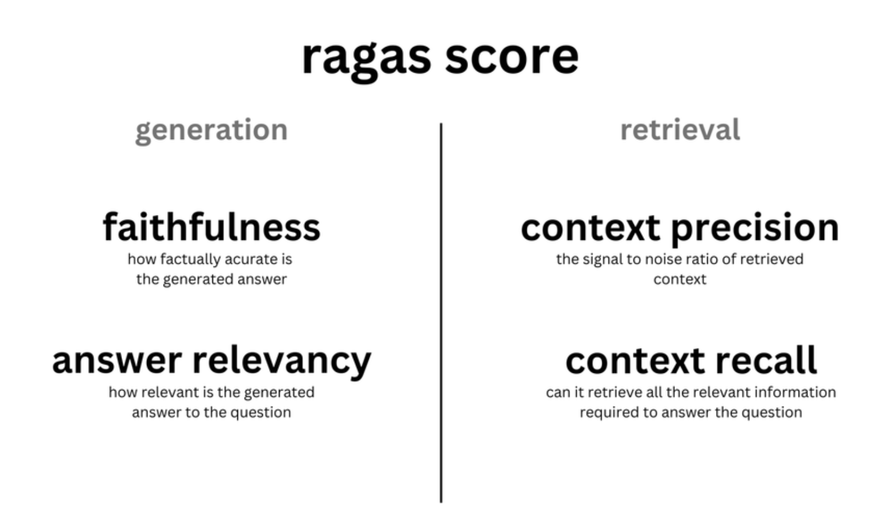
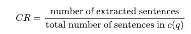
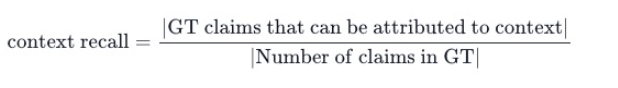
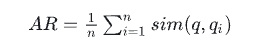

📏 RAG 评估框架与指标
工程实践提示：示例中的模型地址、数据库账号和密钥均应通过环境变量或独立配置文件注入；部署前还需补充权限控制、输入校验、超时重试、日志脱敏、来源引用与离线评估。
学习目标
- 了解RAG系统评估的指标
- 掌握RAGAS框架的原理和使用方式
1 概述
当我们为某个真实线上系统开发了检索增强生成 (RAG) 应用，那么在此应用正式上线提供服务前，我们需要评估 RAG 的表现到底是怎样的。如果发现现有的 RAG 效果不够理想，可能需要一些新的 RAG 算法流程来改进。在这之前，就需要对 RAG 流程进行评估，得到评估指标，然后才能进行自动化对比，观察改进的流程是否真的有效。
2 RAGAS评估框架
RAGAS (Retrieval Augmented Generation Assessment) 我们一般称为 Automated Evaluation of Retrieval Augmented Generation，即检索增强生成的自动评估。Ragas是一个大模型评测框架，可以评估检索增强生成（RAG）的效果，帮助分析模型的输出，了解模型在给定任务上的表现。Github地址: https://github.com/explodinggradients/ragas
RAGAS的评估主要基于两个方向：检索部分和生成部分，那么针对不同的部分评估的指标也会有所区分。接下来，我们将分别介绍RAGAS评估框架所需的数据，评估指标，实际用例等。
2.1 数据说明
最开始的 RAGAs 在评估数据集时，不必依赖人工标注的标准答案，而是通过底层的大语言模型 (LLM) 来进行评估。所以只需要一个带有问题-答案对的评估数据集（QA 对），如：https://huggingface.co/datasets/m-ric/huggingface_doc 具体字段：
- question：作为 RAG 管道输入的用户查询，输入。
- answer：从 RAG 管道生成的答案，输出。
- contexts：从用于回答question外部知识源中检索的上下文。
- ground_truths：question的基本事实答案。这是唯一人工注释的信息。
2.2 评估指标

- **评估检索（context）**的指标：提供了上下文相关性（context_relevancy）和上下文召回率（context_recall），这些可以衡量你的检索系统的性能，即检索的段落是否相关。
- **评估生成（answer）**的指标：提供了忠实度（faithfulness），用以衡量生成的信息是否准确无误；以及答案相关性（answer_relevancy），用以衡量答案对问题的切题程度，即模型生成的答案是否恰当。
2.2. 1 上下文相关性 (context relevance)
- 作用：指的是检索到的上下文应该只包含回答问题所需的信息，这个指标旨在惩罚包含冗余信息的情况。
- 比率越高，表示检索到的上下文与问题的相关性越强。
-
实现方式：
-
为了估算上下文的相关性，我们用 LLM 从上下文 C(q) 中抽取对回答问题 q 至关重要的句子 S。提取的prompt如下：
Text请从提供的{上下文}中提取可能有助于回答以下{问题}的相关句子。 如果没有找到相关句子，或者你认为问题无法从给定上下文中得到回答， 则返回短语“信息不足”。 在提取候选句子时，你不得更改给定上下文中的句子。
-
然后，在RAGAS中，通过下面的公式计算相关性：

-
2.2.2 上下文召回率 (context recall)
- 作用：衡量检索到的上下文(contexts)与真实答案（ground_truths）的匹配程度。
- 该指标通过问题、标注答案和检索到的上下文计算，分数范围在0到1之间，得分越高表示性能更好。
- 要从真实答案中估计上下文召回率，需要分析真实答案中的每个声明（claim），以确定它是否可以归因于检索到的上下文。理想情况下，真实答案中的所有声明都应可归因于检索到的上下文。
-
实现方式：
Text假设真实答案（Reference Answer）为： 真实答案： “2010年世界杯的冠军是西班牙。” “西班牙在决赛中以1-0击败了荷兰。” RAG检索到的上下文（Retrieved Context）为： 检索到的上下文： “西班牙在2010年世界杯的决赛中击败了荷兰。” “2010年世界杯的冠军是西班牙，西班牙队首次赢得世界杯。” 步骤具体实施： 声明1： "2010年世界杯的冠军是西班牙。" 输入给GPT-3.5：检索到的上下文 + 声明1。 GPT-3.5检查上下文是否包含“2010年世界杯的冠军是西班牙”。 结果：GPT-3.5发现上下文包含该信息，因此该声明“召回”。 声明2： "西班牙在决赛中以1-0击败了荷兰。" 输入给GPT-3.5：检索到的上下文 + 声明2。 GPT-3.5检查上下文是否包含“西班牙在决赛中以1-0击败了荷兰”。 结果：GPT-3.5确认上下文中提到西班牙击败了荷兰，但未提到具体的比分1-0，因此该声明“未召回”。 计算召回率： 总声明数：2（声明1和声明2）。 被召回的声明数：1（声明1被召回，声明2未召回）。 Context Recall =0.5
-
公式：

- 分子：GT claims that can be attributed to context，表示在真实答案（GT）中的论断中，有多少是可以归因于检索到的上下文的。换句话说，这些论断在检索到的上下文中找到了支持或依据。
- 分母：Number of claims in GT 表示真实答案中论断的总数量。
-
2.2.3 忠实度（faithfulness）
- 作用：指答案确实是根据给定的上下文得到的。这对于避免错觉并确保检索到的上下文可以用作生成答案的依据非常重要。
- 如果分数低，它表明 LLM 的回应没有遵循检索到的知识，提供幻觉式答案的可能性增加。
-
实现方式：
-
为了估计忠实度，我们首先使用 LLM 提取一组陈述，S(a(q))。方法是使用以下提示：
Text给定一个问题和答案，从给定答案的每个句子中创建一个或多个陈述。 问题：[问题] 答案：[答案]
-
生成 S(a(q)) 后，LLM 判断每个陈述 si 是否可以从 c(q) 中推断出来。这个验证步骤使用以下提示进行：
Text考虑给定的上下文和以下陈述，然后确定它们是否由上下文中的信息支持。在得出结论（是/否）之前，为每个陈述提供简要解释。在最后以给定格式为每个陈述提供最终结论。不要偏离指定的格式。 陈述：[陈述 1] ... 陈述：[陈述 n]
- 最终的忠实度分数，F，计算为 F=|V|/|S|，其中 |V| 表示 LLM 支持的陈述数量，|S| 表示陈述的总数。
-
2.2.4 答案相关性（answer relevancy）
- 作用：生成的答案与查询之间的相关性。分数越高，相关性越好。
-
实现方式：
-
为了估计答案的相关性，我们提示 LLM 根据给定的答案生成 n 个潜在问题 qi，如下所示：
Text为给定答案生成一个问题。 答案：[答案]
- 具体步骤：
- 对给定答案，提示大型语言模型（LLM）生成基于该答案可能的 n个问题 qi。
- 使用embedding模型获取所有问题的嵌入表示。
- 对于每个生成的问题 qi，计算它与原始问题 q 之间的相似度 sim(q,qi)。这里的相似度是通过计算对应嵌入之间的余弦相似度来得到的。
- 答案相关性得分（平均相似度） A*R* 通过以下公式计算：
-
-
用公式表达如下:

3 本节小结
- 本章节主要介绍了RAG系统如何实现评估的方式，重点分析了RAGAS系统中：上下文相关性、上下文召回率、忠实度以及答案相关性的相关指标。